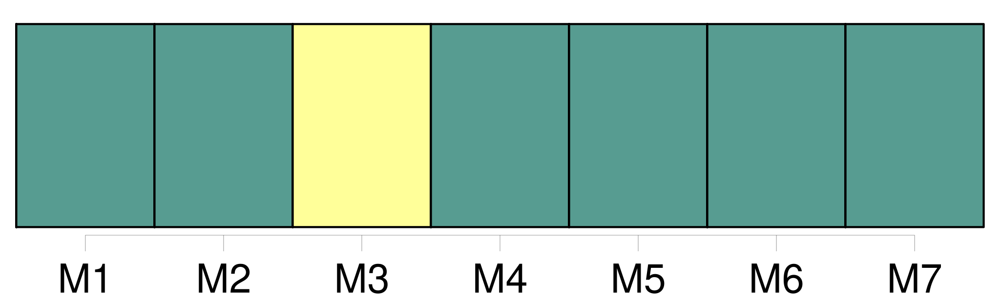
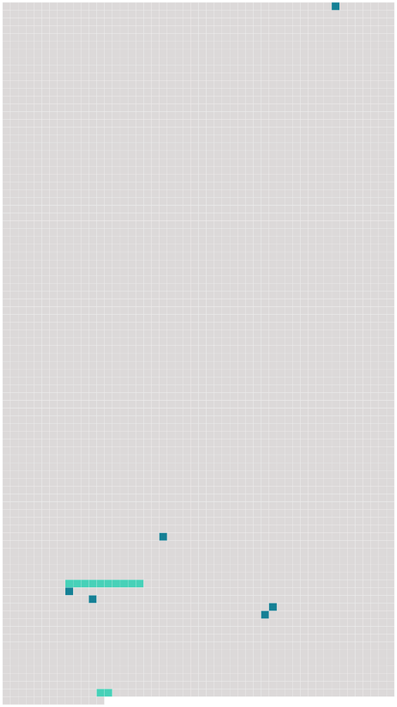

Longueur nb maillons : 8 mentions |
 |
Les États parties communiquent au dépositaire leur méthode de calcul conformément au paragraphe 1 du présent article ou les résultats de la conversion conformément au paragraphe 2 du présent article, selon le cas, lors du dépôt de leur instrument de [ratification] , d'acceptation ou d'approbation de la présente convention ou d'adhésion à celle -ci et chaque fois qu'un changement se produit dans cette méthode de calcul ou dans ces résultats. [91 phrases]
CHAPITRE VII [8 phrases]
La présente convention est soumise à [la ratification des États et des organisations d'intégration économique] qui l'ont signée. [3 phrases]
Les instruments de [ratification] d'acceptation, d'approbation ou d'adhésion seront déposés auprès de l'Organisation de l'aviation civile internationale, qui est désignée par les présentes comme dépositaire. [1 phrases] La présente convention entrera en vigueur le soixantième jour après la date du dépôt auprès du dépositaire du trentième instrument de [ratification] , d'acceptation, d'approbation ou d'adhésion et entre les États qui ont déposé un tel instrument. [2 phrases]
Pour les autres États et pour les autres organisations régionales d'intégration économique, la présente convention prendra effet soixante jours après la date du dépôt d'un instrument de [ratification] , d'acceptation, d'approbation ou d'adhésion. [1 phrases]
Le dépositaire notifiera rapidement à tous les signataires et à tous les États parties : [6 phrases]
Si un État comprend deux unités territoriales ou davantage dans lesquelles des régimes juridiques différents s'appliquent aux questions régies par la présente convention, il peut, au moment de la signature, de [la ratification] , de l'acceptation, de l'approbation ou de l'adhésion, déclarer que ladite convention s'applique à toutes ses unités territoriales ou seulement à l'une ou plusieurs d'entre elles et il peut à tout moment modifier cette déclaration en en soumettant une nouvelle. |
 |
Il est possible de télécharger la ressource sur la page Ortolang |
Si vous avez des questions ou vous voyez des erreurs, merci d'envoyer un mail à silvia.federzoni89@gmail.com |